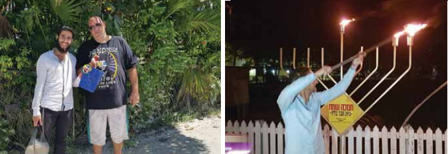

Shluchim, Activities, and Miracles in Belize
While you may have never heard of the Central American country of Belize, Rabbi Menachem Belhamou, his wife Hadar, and their two children have been working there for two years on the Rebbe MH”M’s shlichus to prepare the location for the Redemption. How does this young family manage in such a remote setting, where civilization is decades behind the times? How did they build their activities from day one? And how did Baal Shem’ske miracles reach Belize? Another fascinating shlichus profile on the road to the Redemption.
Translated by Michoel Leib Dobry

Belize is a beautiful country in Central America, along the Caribbean coast. It is bordered by Mexico to the northwest and Guatemala to the west and the south. Belize is considered a diverse country in terms of topography and climate. Southern Belize is highlighted by the Maya Mountain ranges, 1124 meters at their highest peak. The mountains are surrounded by limestone foothills forming stalactite caves and are covered by distinctive tropical vegetation. In contrast, the country’s northern and coastal regions are more level and flat.
One of the more attractive islands in Belize is Caye Caulker, also considered to be its greatest tourist attraction. “Anyone who travels to Belize on vacation comes first to Caye Caulker, which despite its fame is a small island measuring just five square kilometers with very few local residents. One can easily see the entire island from one end to the other,” says the Rebbe’s shliach in Belize, Rabbi Menachem Belhamou. “Most tourists focus on the scuba diving, as there are numerous diving sites spread throughout the region, among them some of the most beautiful coral reefs in the world.”
In the past, island residents had worked in the fishing trade, but today their central source of employment is tourism. Thousands of young Israelis make their way to the island due to the fact that it is far less expensive than other islands in neighboring countries. “In recent years, older tourists have also been coming here. They are drawn by the magically tranquil atmosphere and the slow pace of life. One of the main sayings here is ‘Go slow.’ This is also the reason that the island has almost no cars, although it does have a lot of bicycles. There are beaches, hammocks hung between the coconut trees, and clear water containing giant fish and other amphibious creatures. All this undeniably brings the tourists here.”
About two years ago, Rabbi Menachem Belhamou and his wife Hadar arrived on the island together with their two children on their newly established shlichus.
At the beginning, things were no rose garden. The young tourists placed a fair share of problems and challenges before the new shluchim. However, when they look now on their blessed programs, they realize how all the difficulties evaporated in the face of the Chabad spirit and activism.
The Chabad House is a lighthouse for spreading Yiddishkait. Numerous tourists visit each day to receive advice, participate in Torah classes, put on tefillin, and eat kosher food. We have been told that Shabbos and Yom tov at the Chabad House are an unforgettable experience. “Just this morning, we opened a kosher falafel stand,” says Rabbi Belhamou with satisfaction.
“WE ARRIVED IN BELIZE TWO DAYS BEFORE YOM TOV”
Rabbi Belhamou had heard about Belize when he was on shlichus in Guatemala at the end of his “k’vutza” year. Tourists would come to the local Chabad House and ask why there was no Chabad House in Belize.
After marrying his wife Hadar, it was clear to both of them that their lives’ objective would be to go on shlichus. After two years of building their relationship in Eretz Yisroel, they decided to fulfill their dream and began to look for an appropriate place for shlichus. “Over a period of several months, we visited various places – and then I recalled Belize. Yet, I also remembered that for every person who asked ‘Why is there no Chabad House in Belize?’, there were those who said that there really was no reason to open a Chabad House there due to its small number of tourists.”
By this time, the Belhamous already had two children, and after much consideration, they decided to go to Belize for a few months to check things out. If they found it to be suitable, only then would they stay there permanently. “Our departure from Eretz Yisroel was set for about a week and a half before Rosh Hashanah. We arrived first in Playa del Carmen, Mexico to make our final arrangements, and from there we planned to arrive on the island on Erev Rosh Hashanah.
“The truth is,” Rabbi Menachem Belhamou admitted, “that while the decision had been made, I still wasn’t completely set on the whole idea. Then, something quite interesting happened. One of the T’mimim in Playa del Carmen wrote to the Rebbe about a certain matter and he read the answer to all those present. When I heard the answer, I was positively dumbstruck.”
The issue causing Rabbi Belhamou the greatest doubts was whether he was doing the right thing by getting ready to invest all his efforts in such a small country with a relatively small number of tourists in comparison to other places. “That answer was addressed to a shliach who had written to the Rebbe about the lack of success in his outreach activities with the many Jews in the city of his shlichus. In his reply, the Rebbe spoke about the tremendous quality of a family-style avoda with just a few Jews. The Rebbe added: ‘Who knows if over the years he will reveal more and more Jews in his city.’ When I heard these words, I felt that they were meant for me. All the doubts that had been plaguing me disappeared and I went out dancing…”
When he was still in Playa del Carmen, before he had even set foot in Belize, Rabbi Belhamou publicized the opening of registration for Rosh Hashanah prayer services and holiday meals. “After only a few hours, twenty Jewish tourists had already signed up,” he said.
“We arrived in Belize two days before Yom tov. We spent a whole day just looking for a place to rent where we could both live and hold our Rosh Hashanah activities. It was only during the evening hours that we found an appropriate facility, and after a sleepless night against all odds, we managed to begin the holiday with plenty of food and a proper place to daven. About fifty tourists celebrated with us the first Rosh Hashanah with Chabad in Belize.”
With each passing day, the shluchim revealed more and more local Jewish residents on the island as they came to them for a variety of reasons. The shluchim realized rather quickly that their work in Belize was great and wide-ranging. “Today, we know that besides the tourists, several dozens of Jews also live here. At the outset, we never imagined that there would be so many Jewish souls here, and who knows if they ever would have become aware of their Judaism were it not for the Chabad House activities.”
LAST-MINUTE SALVATION
Belize is a country where modern civilization has still not reached its shores. Primitiveness cries out from every corner. There are no paved highways or any public services that would be considered standard anywhere else.
The shluchim are still out looking for a permanent facility to serve as a base for their activities. “We have been searching two years now for an appropriate building. There were a number of occasions when we were about to sign a rental contract, however, at the last minute, the deal did not close for one reason or another.
“The search for a large and suitable facility occupied a great deal of time and effort from the very start of our shlichus. Only last week, we wrote about this to the Rebbe and we were privileged to receive a reply. The Rebbe wrote that what made the Jewish People into a nation when they left Egypt was specifically the difficulties they encountered in the desert, and this is the very thing that will bring personal and general redemption. This letter strengthened us, as we now are engaged in negotiations with the owners of a number of possible buildings. We are hoping for the best.”
Rabbi Menachem Belhamou shared a story with us that he experienced a short while ago in connection with his search for a spacious Chabad House facility. The story teaches us how much the Rebbe’s shluchim are protected from harm and assisted by the Hand of Divine Providence. “A Jewish-American couple came to the Chabad House one morning with an offer to assist us in finding an affordable plot of land on the island. They even promised to find donors who would help us in the construction of the Chabad House. At first, I was very excited and gave my consent.
“A week later, they returned and said that they had found a suitable building for us and asked for an initial down payment. While they appeared to be honest and trustworthy, nevertheless, we were suspicious and did some research on them. Only then did I discover that they are swindlers who had cheated numerous Torah institutions in the United States, then running off before they could be caught by the authorities. We had been saved by Heaven from being victimized by these people.”
THE NEIGHBOR WHO UNWITTINGLY REVEALED MORE JEWS
The Chabad House in Belize has become an established venue among the country’s Jewish tourists. All of them know that it is the address for all things Jewish, including material assistance. When a Jew in Belize is in trouble, he knows where to go for help.
“It’s amazing to see and experience how much the Rebbe accompanies us and our activities every step of the way. The Divine Providence at the Chabad House is an amazing daily fact. This past Chanukah, we lit the central menorah in front of our house. The neighbor on the upper floor complained that the smoke was coming into her house through the windows, giving the walls a foul smell. The next day, we decided to move the menorah several meters from the front of the house to a place where people walking along the main street could see it better.
“From that moment on, more and more non-Israeli Jews, people whom I never imagined to be Jews, started coming into the Chabad House. This was literally a karkafta Chanukah: Many Jews heard the story of the Chanukah miracle for the first time. All this happened in the merit of our neighbor’s vexing complaints. If the menorah had remained at the front of the house, those Jewish passers-by in the street would not have been exposed to it and would not have become known to us. These are Jews who weren’t really looking for a Chabad House…
“During Chanukah, we also experienced another very unique and Heavenly-inspired story. A young Jewish woman, who by Divine Providence just happened to be passing through the street and noticed the menorah, came into the Chabad House and burst into tears. She said that she was originally from Miami, where she had been raised in a non-religious home, although they did observe some of the mitzvos. She came to Belize to work as a volunteer with residents in a small and remote village, located several hours’ journey from the island.
“She shared with us the fact that despite the many difficulties, she stringently observed the laws of kashrus. She said that there were times when she almost went the whole day without eating in order not to defile her soul with forbidden food. She primarily eats only fruits and vegetables. On Yom Kippur, she pretended that she wasn’t feeling well so that no one would notice that she was thirsty. Those coming to the Chabad House who heard her story were encouraged by the fact that she didn’t look Torah observant. Since then, we have maintained contact with her, and she comes to visit us, naturally to eat kosher – and it was all in the merit of the menorah.”
Rabbi Belhamou has many more stories of Divine Providence, and he shares another story with us, one that he considers quite important:
“Before leaving for our shlichus, we wrote to the Rebbe several times. In each of the Rebbe’s replies, he noted the importance of immersing in a mikveh. Until then, while I had gone to the mikveh regularly each morning, there were days when I was unable to do so. As a result of these letters, I resolved to be far more stringent about going to the mikveh. Later, I saw that I had benefited a great deal from this decision, and I’ll bring two examples among many.
“While we were still in Eretz Yisroel, before boarding our flight, I met a Jew, not a Chabad chassid, in the mikveh. He came at around the same time I did and I spoke with him about our new shlichus. He took a great interest and was filled with much enthusiasm and excitement. Right then and there, he gave a very generous donation, also signing a standing bank order for a monthly contribution.
“The second incident took place when we were already in Belize. Since there was no mikveh anywhere in the country, I would customarily immerse in the sea early in the morning. One day, an elderly man came by where I was immersing, and he was very excited to see me. As we began to talk, he amazed me when he said that he was a Jew. He even had a Jewish name: Moshe. It turned out that many years before, he belonged to one of the strongest ultra-Orthodox communities in New York. While he had been Torah observant, as the years passed, he had left the traditional Jewish lifestyle and came by himself to live in Belize. I invited him to come to the Chabad House and we helped him acquire the medications he needed. Since then, we have remained in touch – and it was all in the merit of going to the mikveh each morning.”
GATHERING THE SOULS
Belize is about the size of modern-day Eretz Yisroel, however, its population is much smaller – only about three hundred thousand residents. Together with the tremendous work with Israeli tourists, Rabbi Belhamou also finds lost and wandering Jews who are residents on the island, those who fit the definition of “the fifth son” at the Pesach seder.
“One day, a group of tourists came into the Chabad House. They said that they had been sitting in a nearby inn, where the innkeeper happened to tell them that her parents were Jewish. Several years earlier, she had come from Australia and had married a local Gentile.
“The very next day, I arranged to meet with her. During our discussion, I learned that in her youth she had gone to Jewish educational institutions. She had several children, and when we opened a Sunday school, we suggested that she register her children there. She gladly agreed. Since then, her children come to the Chabad House each Sunday and learn about Judaism. We started teaching them the basics: the story of the Creation, Avraham Avinu, and the great quality of the Jewish People. Once we realized how ignorant they were, we invested much effort with them to strengthen their connection to their Jewish roots.
“At first, it didn’t seem that the school program had any influence upon them. The mother herself would say to us, ‘If the children are happy, then I’m happy too.’ Recently, we began noticing signs of the mother getting closer to the path of Torah. She lit Chanukah candles and resolved to light Shabbos candles each Friday. When the grandmother, who came from Australia to visit her daughter, realized that her grandchildren were learning Torah with us, she was so overjoyed that she couldn’t stop crying. She stayed with them for a while and she would bring the grandchildren to the Chabad House at every opportunity. Today, those children know a great deal about their Jewish heritage and are learning about more and more mitzvos.”
Rabbi Belhamou has other examples of the gathering of lost souls slowly back into the hearth of the Jewish People. “Not long ago, two young Jews came into the Chabad House. The girl was from England and knew a thing or two about her Judaism, although she wasn’t observant. She said that during her tour of Mexico, she met a young Jew from the States who, apart from being Jewish, knew nothing about his own Judaism. He had never put on tefillin before nor had he observed any of the Jewish holidays. She asked if we could make a bar-mitzvah for him, and we invited a lot of Israelis to come and join in the celebration.
“My wife put a lot of effort into the preparations. She baked him a cake, arranged the tables with a nice meal, and after he put on tefillin, all the invited guests broke out in joyous dancing. When the party was over, he called his mother from the Chabad House and told her about the experience he just had. She was absolutely delighted, shedding tears of pure joy as she apologized for not teaching him anything about his Jewish roots and identity.”
Rabbi Belhamou recalls another episode that could only happen in a remote country like Belize. “A few months after we arrived in Belize, I came across a story that was both strange and interesting. The son of Belize’s president had previously immigrated to Eretz HaKodesh, where he underwent a halachic conversion and joined a certain Chassidic community as a full-fledged member. During one of our conversations, he claimed that he did this despite the fact that it was clear to him that he was already a Jew, as his maternal grandmother from Portugal was Jewish.
“However, a few years later, he made a complete U-turn and stopped observing Torah and mitzvos. He went back to live near his father, the president of Belize. We asked to meet with him, and since then we have kept in very close touch with one another. He has been most helpful in obtaining permits and dealing with the bureaucracy. For example, thanks to him, we were able to bring meat, matzos, and wine into the country for Pesach. He periodically stops by the Chabad House and enjoys the atmosphere. Sometimes his Jewish spark is ignited as well, and he asks us to give him opportunities to fulfill more mitzvos, such as blessing the lulav and esrog on Sukkos or eating matzos on Pesach…”
THE TAXI DRIVER WHO BECAME WEALTHY THANKS TO THE CHABAD HOUSE
How do the local Gentiles accept you and the Chabad House’s activities?
“Most of them accept us quite nicely, except for a few businessmen who are certain that we came to compete with them and jeopardize their financial interests. Unlike other countries in Central America, English is the official language of Belize. While most of its citizens are simple people of meager means, there are also devout Christians in Belize who appreciate religious people and from this group comes the appreciation for our activities.
“At each meeting, whether random or planned, we give them a card about the Seven Noachide Laws. Just last week, I sat with a local attorney for a meeting on the possibility of purchasing a plot of land on the island, with most of the time devoted to talking about Judaism and the obligation to observe the Seven Noachide Laws.
“There’s a very pleasant cab driver on the island, and he has become my right-hand man. At every request, he comes as soon as we need him. His story is quite an amazing one: When we arrived on the island, we knew absolutely no one. We got into a cab and asked the driver to give us a tour. During this tour, we spoke to him about Judaism and the purpose for our coming to the island. He was very impressed, and before we got out of the cab, we asked him what his fare was, but he wouldn’t accept payment. ‘Any time you have to go somewhere, I’m at your service,’ he said to our great surprise. And so it was. Whenever we needed a ride, we would call him and he would take us for no charge. When we had a problem with the building owner from whom we were renting the Chabad House facility, he came to help calm things down.
“This cab driver believes that we are G-d’s emissaries, and his success comes from his helping us. In fact, he has recently achieved a great deal of success. While he had previously been just a hired cabbie, since we became acquainted with him, his business has grown and developed. Today, he has bought his own cab and has even started a taxi company. He is due to finish building his home in the coming days. He tells all his non-Jewish friends that his wealth came in the merit of his helping us.”
A BAAL SHEM’SKE MIRACLE IN BELIZE
This vast array of activities must cost a great deal of money. How do you manage to finance all this?
“On this matter, we see miracles and wonders. However, it appears to me that every shliach will tell you about cases of nagging debts and how the salvation always comes from unlikely sources. Here’s an example to illustrate this point: This time last year, we were in very serious debt. The Chabad House’s bank account was managed in Eretz Yisroel and we were beside ourselves with worry. It was clear to us that sooner or later, the account would be frozen and we would be unable to continue our operations. We were very concerned. Instead of collecting additional funds, we would have to invest much time covering our outstanding debts.
“When I recall that time, I become quite moved because this was literally a wonder straight out of the tales of the Baal Shem Tov. We sought to continue our routine activities while trying our luck in finding donors and donations that had yet to reach significant amounts.
“One night, a tourist came into the Chabad House and before we could say a word to her, she said that she had heard all about our activities. She then told us that she knew a donor who wanted to make an anonymous contribution. When she asked how much our debts were, we gave her the number of our bank account. This unknown donor eventually covered the amount in full.
“Some time later, when we came to Eretz Yisroel for a visit, we discovered that the bank had already sent letters threatening legal action, even court orders. Only then did we understand how much this anonymous contribution had saved the day. It enabled us to continue investing our time in advancing our outreach programs, rather than paying off debts. It would seem that this would be an appropriate opportunity to express our thanks and appreciation for the contribution given in memory of Yona Sara Tova bas Chana Leah.”
We can clearly see that your Chabad House lives and breathes Moshiach. How is this matter accepted?
“Our motto on this subject is ‘Simply Moshiach.’ It’s clear to me that the Rebbe is Melech HaMoshiach and we are working on his shlichus, and we surely would not have come to Belize without him. I live in this spirit and convey it to those around me. We have been operating in Belize for two years already and I have never heard any opposition to this issue. Every communal prayer service in the Chabad House concludes with the holy proclamation of ‘Yechi Adoneinu.’ We have prepared sets of the Rebbe’s picture over the words ‘Melech HaMoshiach’ together with a coin for tz’daka, thereby making the tourists into ‘shluchei mitzvah’ to the next Chabad House they will encounter on their journey.
“Tourists know quite well that Chabad is Moshiach and Moshiach is Chabad. At every opportunity, we speak about the faith in the coming of Moshiach. My wife became affiliated with Chabad through answers in the ‘Igros Kodesh’ and she frequently tells her personal story to the female tourists. This definitely has a powerful influence, and when she finishes her story, the women ask if they too could write to the Rebbe and receive his blessing.”
In conclusion, what are your plans for the future?
“The only plans that we constantly have are for our activities to grow and develop. As I mentioned previously, we recently opened a kosher restaurant, spending a great deal of time on this project. However, this is only one link in a chain of tremendous programs that we are working on. As I have already said, we are currently looking into the possibility of purchasing a large and spacious building or a plot of land for building an appropriate facility. It’s important that the Chabad House should have a permanent home for a synagogue, an assembly hall, a mikveh, and a kindergarten.
“Not far from us is another island – S. Pedro. This is a larger island where many Jews and Israelis visit. Our dream is to bring a shluchim couple who would open a Chabad House there.
“There is a Jew, a former resident of the island, who has established close connections with Belize’s tourism minister. The minister asked him to find ways to increase Jewish tourism on the island. The man explained to the minister that one way to encourage this is through the founding of a synagogue. Since we have also been closely acquainted with this Jew, he made a connection for us as well, and in the coming days we will have a meeting with the minister for the purpose of determining how to advance this proposal.”
Nosson Avrohom. "Shluchim, Activities, and Miracles in Belize." Beis Moshiach, no. 1117 (May 8, 2018).